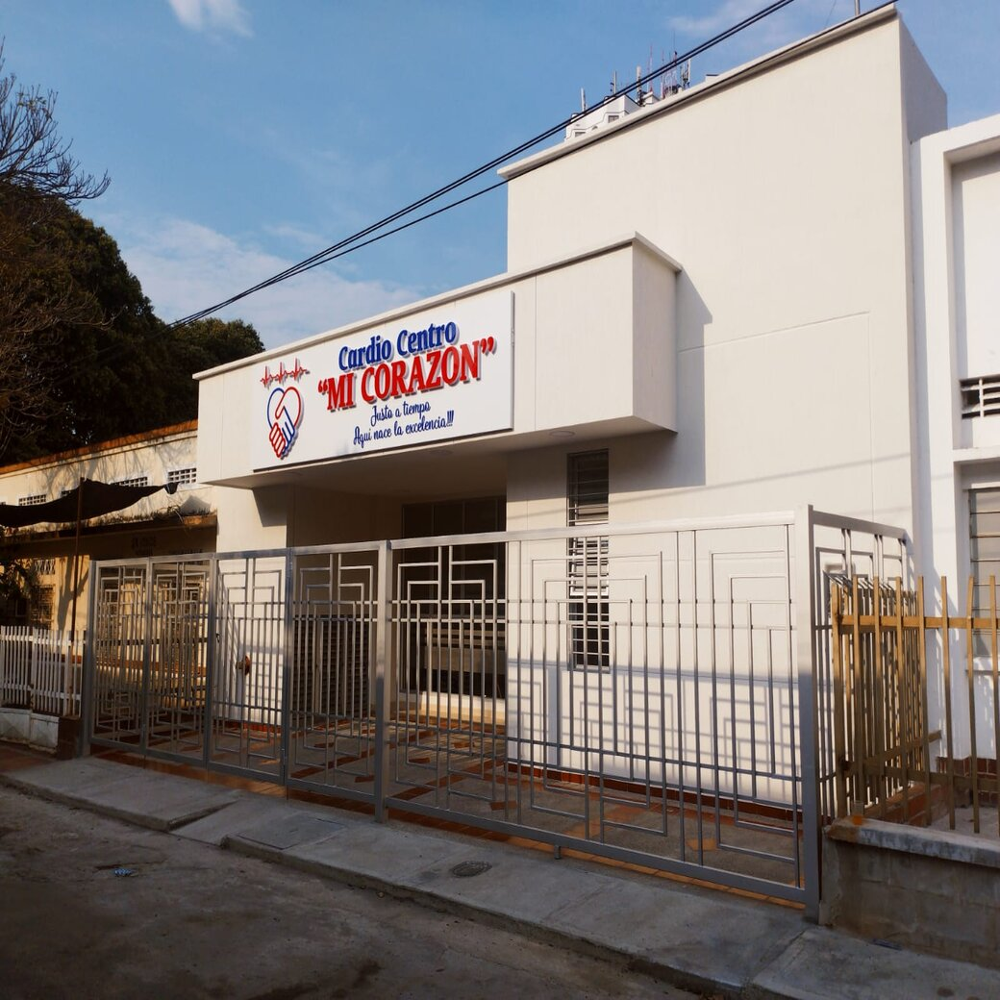

Cardio Centro Mi Corazón Ltda. es una organización que nace con el objetivo de prestar un servicio oportuno con calidad, eficiencia y eficacia, en el campo de las imágenes diagnosticas en la cardiología no invasiva, hemodinamia y rehabilitación cardiaca. Con tecnología de punta y alta formación académica de sus miembros. Su fin consiste en cubrir las necesidades generales y expectativas de quienes demanden nuestros servicios.
Prestar servicios de salud en consulta externa de cardiología, medicina interna, estudios de apoyo diagnóstico vascular no invasivo con altos estándares de calidad, oportunidad, seguridad, pertinencia, accesibilidad, orientado a brindar una atención integral, con trato humanizado y satisfacción de las necesidades y expectativas de los usuarios.
Cardiocentro Mi corazón Ltda para el año 2025 será la IPS de diagnóstico cardiovascular y consulta especializada, líder de la región surcolombiana, comprometida con el desarrollo humano, tecnológico y medioambiental, para satisfacer las necesidades de todos los que intervienen en los procesos de la institución.